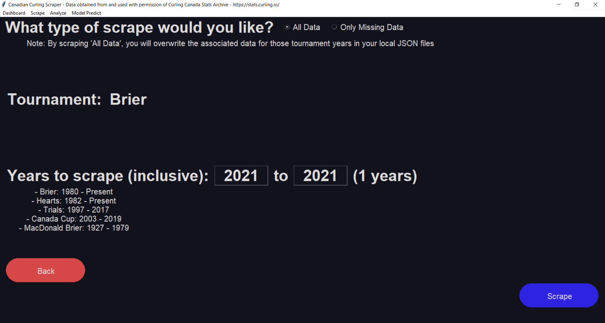

Curling Canada Scraper
- Author: Matthew Buglass
- Copyright © 2021. Edwards School of Business - University of Saskatchewan
- Version: 01.00.00
- Maintainer: Matthew Buglass
- Email: scrapefl@gmail.com
- Status: Stable Release
- Curling data collected from and used with permission of Curling Canada
About
This program allows for scraping data from Canadian National curling championships
dating back to the 1928 MacDonald Brier. Additionally, users can customize their data
sets and preview them before exporting to a csv file format.
Change Log
Version 01.00.00: Initial stable release. Includes neural network model training and saving.
Version 00.01.20: Various bug fixes for retrieving csv data.
Version 00.01.10: Hotfix for function adding in analysis section.
Version 00.01.00: Initial Beta Release.
Features
Data Scraping

By clicking “Scrape” in the top left toolbar users can choose to scrape only years
of data that are not on file, or scrape all new data in case of database changes or
updates. Users can choose one of 5 professional curling tournaments:
- Brier
- Hearts
- Men’s Trials
- Men’s Canadian Cup
- MacDonald Brier
After choosing the tournament and years, users can see progress updated from
the scrape while they wait for it to complete. After the data is on file locally,
summary statistics can be viewed for each tournament and year on the main screen
dashboard.

Data Customization and Export

By clicking “Analyze” in the top Left toolbar users are able to choose a tournament
and year range of data that they would like to analyze.
- Tournament: This is which tournament is to be analyzed (i.e. Brier, Hearts, Men’s, Women’s, All, etc.)
- Years: The inclusive year range of data
- Dependent Variable: The data variable that you’d like to predict
- Only one occurrence of a variable can appear in a data set (i.e. one variable cannot be
both dependent and independent)
- The dependent variable will always appear to the far right of the data set
- Granularity: This is the level at which the data will be analyzed. The statistics from the
different levels of granularity can be combined using functions like add, sum, division, average,
standard deviation, and many more. There are 3 levels of granularity:
- Match will yield one data line for each game played and is used for comparing match ups
- Team will yield two data lines for each game played (one for each team)
- Player will yield one data line for each player in each game
- Data Variables: The data variables are on the left side of the screen and can be clicked on
to be added as independent variables to the data set. The variables will be added to the data set
in the order that they were clicked on. Selected variables will be highlighted.
Adding Variable Options


If the independent variable to you need is not present, “Add Option” can
be clicked on to add new variables. A new window will pop up presenting you with options to add your own
custom data variables. Dropdown menus are available showing available functions, special states
(winner, loser, red, yellow, etc.), and data elements to be used. Any previously created data variable can
be used as an input for the data selection.

Additionally, if line scores are selected as a data element the ends necessary will need to be specified.
Exporting to CSV
To export your data to a CSV, click the green “To CSV” button in the bottom right. The data set will be
cleaned by removing any records that do not match the expected values for each data field, and a file dialog
window will be launched to permit you to save the file in your desired location.
Neural Network Training
Neural Network Settings
In this menu, you can customize the setting for a neural network that will be trained on the data set that
you just created. The dependent variable that you selected while customizing your data will be used as the
“target” for the model (ie. the thing that it will try to predict in the output layer), while the other data
elements will be put into the input layer and used to predict the target. At the top of the screen are
overarching settings for your model.
General Settings:
- Epochs: Epochs are the number of times that hte model is to be shown the data.
At each epoch, the data elements in the testing data set are shuffled and fed
through the network. The more epochs you use, the more accurate your model will be
(up to a point, because epoch number increases yield diminishing returns) but the
longer that your model will take to train.
- Model Optimizer: The optimizer is the algorithm or method that the model uses to
change the internal weights and biases of the nodes in a neural network. Different
optimizers are more or less useful depending on the nature of your analysis.
- Training Percent: The training percent is a value from 1.0-100.0 that determines
how much of the dataset should be used to train, test, and validate the
model. The number entered will be the percent of the dataset that is used
for training. The remaining percent will be divided evenly into testing and
validation datasets.
- Model Loss Function: The loss function is what is used to calculate the difference
in the model’s prediction and its target. The model attempts to minimize the result from
the loss function using the optimizer algorithm.
- Model Name: This is what you would like to name your model. When saving, this will be the
folder name for the model.
- Evaluation Metrics: These are additional data elements that you would like to use
to judge your model. You can select none, one, or many. Accuracy and Binary Accuracy are
common selections.
Below those, there are the hidden layer settings. Hidden layers are processing steps
that are sandwiched between the input and output layers. The layers are processed
sequentially from the top to the bottom. You can add, move, edit, or delete layers as
you wish. The model can have none, one, or many hidden layers.
Hidden Layer Settings:
- Name: This is what you’d like to name the layer
- Layer Size: This is the number of nodes in the layer. Each node will be initialized
with the activation function of the layer and will be independently updated as the
model is trained.
- Layer Type: The layer type defines how the outputs of the previous layer are
directed to the inputs of this layer.
- Right now only the Dense layer type is available. With the Dense layer type, each
output of the previous layer is used as an input.
- Activation Function: The activation function is the mathematical relationship
between a node’s input and output. As an example, in single variate linear regression,
we have an input and an output, and the mx+b function that results from our regression
is analogous to a node’s activation function.
Neural Network Training
After hitting “Train Neural Network” on the settings screen, the dataset you created will
be cleaned and both it and your settings will be used to create and train a neural
network. While training, progress updates will be displayed on the screen.
- Known Problems: At this stage, if the mouse is clicked a message on the top bar of
the application will say “Not Responding”. Do not worry. Your model is still training,
the window is just not updating. After the model has finished training, the screen will
update with the results from the training
After your model has finished training, you have the option to save it for later, once model
loading and prediction functionalities are implemented. After clicking “Save Model”, you will
select the directory that you would like your models to be saved in. A folder with your model’s
name will be created in that directory.
Bug Reporting
Download Scraper for Windows